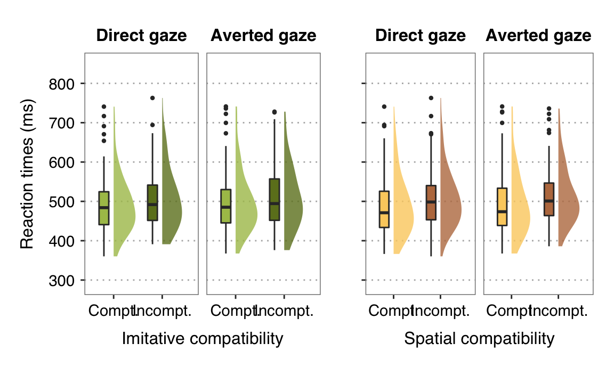
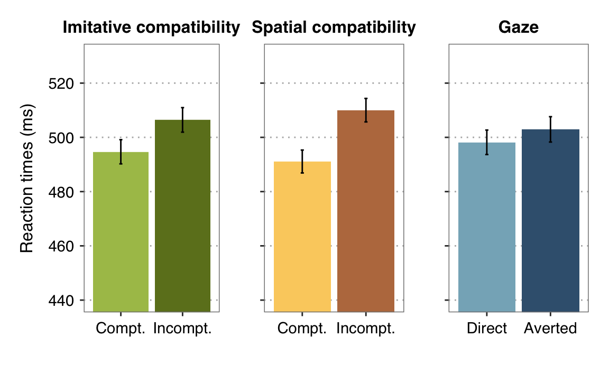
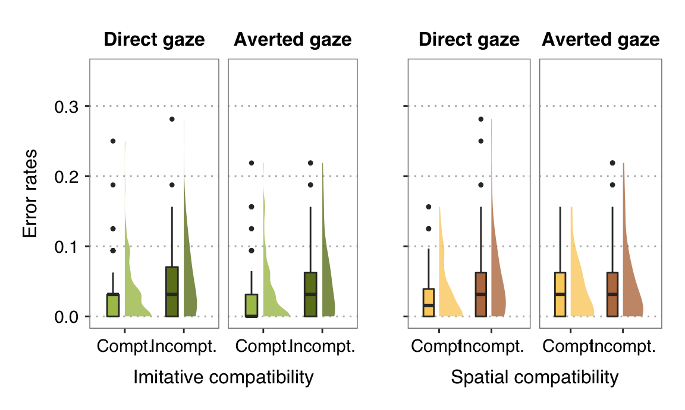
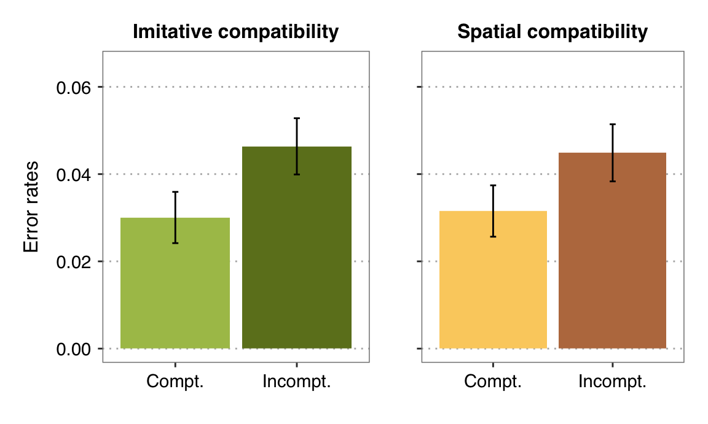
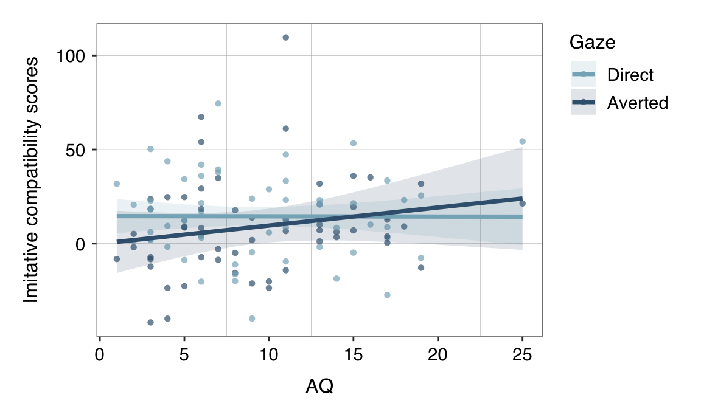
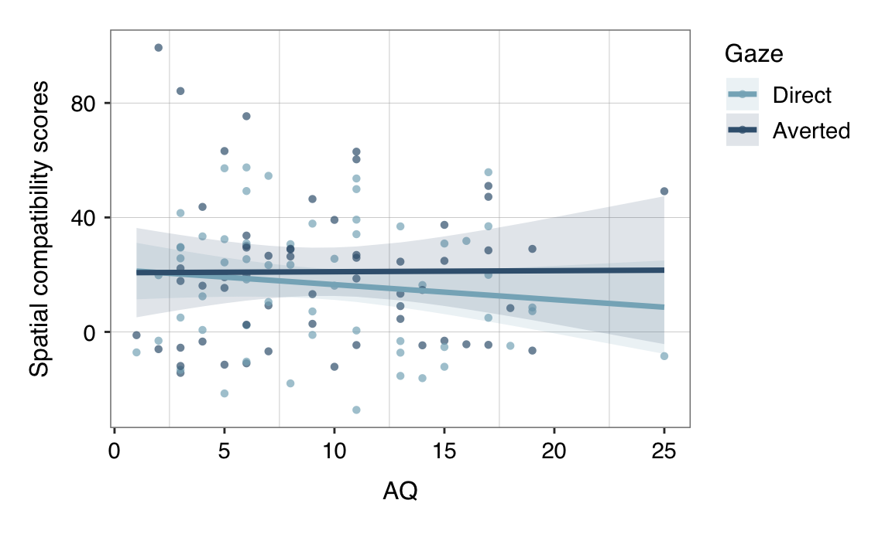

We predicted that gaze would influence automatic imitation independently from spatial compatibility. Specifically, we expected that imitative compatibility effects would be stronger in the direct gaze condition than in the averted gaze condition.
Alternatively, gaze could selectively affect spatial compatibility, such as in Marsh et al. (2016). In this case, we would expect stronger spatial compatibility effects following direct gaze as compared to averted gaze, but no significant gaze effects on imitative compatibility.
RT and ER were assessed independently as measures of performance.
# Gaze*Imitative
# ~~~~~~~~~~~~~~
fig.rt.gi.bp <- ggplot(data=d.aggr, aes(y=rt, x=imitative, fill=imitative)) +
# boxplot & individual points
geom_boxplot(width=0.2, position=position_nudge(x=-.2, y=0), outlier.size=point_size/4) +
geom_flat_violin(position=position_nudge(x=.0, y=0), adjust=1.5, trim=TRUE, alpha=.8, colour=NA) +
facet_grid(~gaze, labeller=labeller(gaze=gaze_labels)) +
# format
scale_fill_manual(values=color_imitative) +
scale_x_discrete(labels=compt_labels) +
labs(x='Imitative compatibility', y='Reaction times (ms)') +
ylim(290, 850) +
expand_limits(x=2.75) +
my_theme
# Gaze*Spatial
# ~~~~~~~~~~~~
fig.rt.gs.bp <- ggplot(data=d.aggr, aes(y=rt, x=spatial, fill=spatial)) +
# boxplot & individual points
geom_boxplot(width=0.2, position=position_nudge(x=-.2, y=0), outlier.size=point_size/4) +
geom_flat_violin(position=position_nudge(x=.0, y=0), adjust=1.5, trim=TRUE, alpha=.8, colour=NA) +
facet_grid(~gaze, labeller=labeller(gaze=gaze_labels)) +
# format
scale_fill_manual(values=color_spatial) +
scale_x_discrete(labels=compt_labels) +
labs(x='Spatial compatibility', y='Reaction times (ms)') +
ylim(290, 850) +
expand_limits(x=2.75) +
my_theme +
theme(
axis.text.y=element_blank(),
axis.title.y=element_blank()
)
# Display plots in a singe grid
# ~~~~~~~~~~~~~~~~~~~~~~~~~~~~~
fig.rt.interact <- cowplot::plot_grid(fig.rt.gi.bp, fig.rt.gs.bp, ncol=2, rel_widths=c(1.25, 1))
fig.rt.interact
# gaze*imitative
rt.gi.descr <- Rmisc::summarySEwithin(data=d.aggr, measurevar='rt', betweenvars=NULL, withinvars=c('gaze', 'imitative'), idvar='id', na.rm=FALSE, conf.interval=0.95)
colnames(rt.gi.descr) <- c('Gaze', 'Imitative', 'N', 'M', 'SD', 'SE', 'CI')
knitr::kable(rt.gi.descr[,c(1:2,4:6)], digits=3, caption='Summary stats: Gaze x Imitative compt.') %>%
kable_styling(full_width=F, position="center", c("hover", "condensed", "responsive"))| Gaze | Imitative | M | SD | SE |
|---|---|---|---|---|
| direct | compt | 490.927 | 27.779 | 2.579 |
| direct | incompt | 505.434 | 26.814 | 2.490 |
| averted | compt | 498.446 | 27.938 | 2.594 |
| averted | incompt | 507.443 | 30.191 | 2.803 |
# gaze*spatial
rt.gs.descr <- Rmisc::summarySEwithin(data=d.aggr, measurevar='rt', betweenvars=NULL, withinvars=c('gaze', 'spatial'), idvar='id', na.rm=FALSE, conf.interval=0.95)
colnames(rt.gs.descr) <- c('Gaze', 'Spatial', 'N', 'M', 'SD', 'SE', 'CI')
knitr::kable(rt.gs.descr[,c(1:2,4:6)], digits=3, caption='Summary stats: Gaze x Spatial compt.') %>%
kable_styling(full_width=F, position="center", c("hover", "condensed", "responsive"))| Gaze | Spatial | M | SD | SE |
|---|---|---|---|---|
| direct | compt | 489.761 | 25.541 | 2.371 |
| direct | incompt | 506.600 | 28.092 | 2.608 |
| averted | compt | 492.439 | 27.753 | 2.577 |
| averted | incompt | 513.451 | 26.065 | 2.420 |
To test our first hypothesis, we ran a 3-way repeated-measures ANOVA on RT, with within-subject factors Gaze (2 levels: direct, averted), Spatial (2 levels: compatible, incompatible) and Imitative (2 levels: compatible, incompatible).
aov.h1.rt <- aov_4(rt ~ gaze*spatial*imitative + (gaze*spatial*imitative|id), d.aggr)
kable_aov(nice(aov.h1.rt, es='pes'))| Effect | df | MSE | F | pes | p.value |
|---|---|---|---|---|---|
| gaze | 1, 57 | 307.89 | 8.55 ** | .13 | .005 |
| spatial | 1, 57 | 841.68 | 49.36 *** | .46 | <.0001 |
| imitative | 1, 57 | 727.05 | 22.04 *** | .28 | <.0001 |
| gaze:spatial | 1, 57 | 320.49 | 1.57 | .03 | .21 |
| gaze:imitative | 1, 57 | 425.33 | 2.07 | .04 | .16 |
| spatial:imitative | 1, 57 | 1054.27 | 1.63 | .03 | .21 |
| gaze:spatial:imitative | 1, 57 | 371.37 | 0.01 | .0001 | .93 |
Neither of the predicted interactions (Gaze*Imitative nor Gaze*Spatial) were statistically significant. The significant main effects of Imitative and Spatial indicate the occurrance of both spatial and imitative compatibility effects: participants were faster to perform the correct finger action when they observed an imitatively (spatially) compatible vs. incompatible action. In addition, the significant main effect of Gaze indicates that participants responded faster following direct gaze as compared to averted gaze.
# Imitative
# ~~~~~~~
# means & confidence intervals (within-subject, method from Morey 2008)
rt.imit.descr <- Rmisc::summarySEwithin(data=d.aggr, measurevar='rt', betweenvars=NULL, withinvars=c('imitative'), idvar='id', na.rm=FALSE, conf.interval=0.95)
# figure
fig.rt.imit <- ggplot(rt.imit.descr, aes(y=rt, x=imitative, fill=imitative)) +
# bar graphs with means and CI
geom_col() +
geom_errorbar(aes(ymin=rt-ci, ymax=rt+ci), width=0.05, size=line_width-1) +
# format
scale_fill_manual(values=color_imitative) +
coord_cartesian(ylim=c(440, 530)) +
scale_x_discrete(labels=compt_labels) +
labs(title='Imitative compatibility', y='Reaction times (ms)') +
my_theme +
theme(axis.title.x=element_blank())
# Spatial
# ~~~~~~~
# means & confidence intervals (within-subject, method from Morey 2008)
rt.spat.descr <- Rmisc::summarySEwithin(data=d.aggr, measurevar='rt', betweenvars=NULL, withinvars=c('spatial'), idvar='id', na.rm=FALSE, conf.interval=0.95)
# figure
fig.rt.spat <- ggplot(rt.spat.descr, aes(y=rt, x=spatial, fill=spatial)) +
# bar graphs with means and CI
geom_col() +
geom_errorbar(aes(ymin=rt-ci, ymax=rt+ci), width=0.05, size=line_width-1) +
# format
scale_fill_manual(values=color_spatial) +
coord_cartesian(ylim=c(440, 530)) +
scale_x_discrete(labels=compt_labels) +
labs(title='Spatial compatibility', y='Reaction times (ms)') +
my_theme +
theme(
axis.text.y=element_blank(),
axis.title=element_blank()
)
# Gaze
# ~~~~
# means & confidence intervals (within-subject, method from Morey 2008)
rt.gaze.descr <- Rmisc::summarySEwithin(data=d.aggr, measurevar='rt', betweenvars=NULL, withinvars=c('gaze'), idvar='id', na.rm=FALSE, conf.interval=0.95)
# figure
fig.rt.gaze <- ggplot(rt.gaze.descr, aes(y=rt, x=gaze, fill=gaze)) +
# bar graphs with means and CI
geom_col() +
geom_errorbar(aes(ymin=rt-ci, ymax=rt+ci), width=0.05, size=line_width-1) +
# format
scale_fill_manual(values=color_gaze) +
coord_cartesian(ylim=c(440, 530)) +
scale_x_discrete(labels=c('Direct', 'Averted')) +
labs(title='Gaze', y='Reaction times (ms)') +
my_theme +
theme(
axis.text.y=element_blank(),
axis.title=element_blank()
)
# Display two plots in a singe grid
# ~~~~~~~~~~~~~~~~~~~~~~~~~~~~~~~~~
fig.rt.maineffects <- cowplot::plot_grid(fig.rt.imit, fig.rt.spat, fig.rt.gaze, ncol=3, rel_widths=c(1.3, 1, 1))
fig.rt.maineffects
descr.rt.maineffects <- cbind(rt.imit.descr[,c(1,3:5)], data.frame(' '=c(' ', ' ')), rt.spat.descr[,c(1,3:5)], data.frame(' '=c(' ', ' ')), rt.gaze.descr[,c(1,3:5)])
colnames(descr.rt.maineffects) <- c('Imitative', 'M', 'SD', 'SE', ' ','Spatial', 'M', 'SD', 'SE', ' ','Gaze', 'M', 'SD', 'SE')
knitr::kable(descr.rt.maineffects, digits=2, caption='Summary statistics of main effects:') %>%
kable_styling(full_width=F, position="center", c("hover", "condensed", "responsive")) | Imitative | M | SD | SE | Spatial | M | SD | SE | Gaze | M | SD | SE | ||
|---|---|---|---|---|---|---|---|---|---|---|---|---|---|
| compt | 494.69 | 34.46 | 2.26 | compt | 491.10 | 32.65 | 2.14 | direct | 498.18 | 34.91 | 2.29 | ||
| incompt | 506.44 | 34.92 | 2.29 | incompt | 510.03 | 33.47 | 2.20 | averted | 502.94 | 36.11 | 2.37 |
# Gaze*Imitative
# ~~~~~~~~~~~~~~
fig.er.gi <- ggplot(data=d.aggr, aes(y=er, x=imitative, fill=imitative)) +
# boxplot & individual points
geom_boxplot(width=0.2, position=position_nudge(x=-.2, y=0), outlier.size=point_size/4) +
geom_flat_violin(position=position_nudge(x=.0, y=0), adjust=1.5, trim=TRUE, alpha=.8, colour=NA) +
facet_grid(~gaze, labeller=labeller(gaze=gaze_labels)) +
# format
scale_fill_manual(values=color_imitative) +
scale_x_discrete(labels=compt_labels) +
labs(x='Imitative compatibility', y='Error rates') +
expand_limits(x=2.55, y=0.35) +
my_theme
# Gaze*Spatial
# ~~~~~~~~~~~~
fig.er.gs <- ggplot(data=d.aggr, aes(y=er, x=spatial, fill=spatial)) +
# boxplot & individual points
geom_boxplot(width=0.2, position=position_nudge(x=-.2, y=0), outlier.size=point_size/4) +
geom_flat_violin(position=position_nudge(x=.0, y=0), adjust=1.5, trim=TRUE, alpha=.8, colour=NA) +
facet_grid(~gaze, labeller=labeller(gaze=gaze_labels)) +
# format
scale_fill_manual(values=color_spatial) +
scale_x_discrete(labels=compt_labels) +
labs(x='Spatial compatibility', y='Error rates') +
expand_limits(x=2.75, y=0.35) +
my_theme +
theme(
axis.text.y=element_blank(),
axis.title.y=element_blank()
)
# Display two plots in a singe grid
# ~~~~~~~~~~~~~~~~~~~~~~~~~~~~~~~~~
fig.er.boxplot <- cowplot::plot_grid(fig.er.gi, fig.er.gs, ncol=2, rel_widths=c(1.25, 1))
fig.er.boxplot
# gaze*imitative
er.gs.descr <- Rmisc::summarySEwithin(data=d.aggr, measurevar='er', betweenvars=NULL, withinvars=c('gaze', 'imitative'), idvar='id', na.rm=FALSE, conf.interval=0.95)
colnames(er.gs.descr) <- c('Gaze', 'Imitative', 'N', 'M', 'SD', 'SE', 'CI')
knitr::kable(er.gs.descr[,c(1:2,4:6)], digits=3, caption='Summary stats: Gaze x Imitative compt.') %>%
kable_styling(full_width=F, position="center", c("hover", "condensed", "responsive"))| Gaze | Imitative | M | SD | SE |
|---|---|---|---|---|
| direct | compt | 0.031 | 0.040 | 0.004 |
| direct | incompt | 0.048 | 0.039 | 0.004 |
| averted | compt | 0.029 | 0.034 | 0.003 |
| averted | incompt | 0.045 | 0.042 | 0.004 |
# gaze*spatial
er.gi.descr <- Rmisc::summarySEwithin(data=d.aggr, measurevar='er', betweenvars=NULL, withinvars=c('gaze', 'spatial'), idvar='id', na.rm=FALSE, conf.interval=0.95)
colnames(er.gi.descr) <- c('Gaze', 'Spatial', 'N', 'M', 'SD', 'SE', 'CI')
knitr::kable(er.gi.descr[,c(1:2,4:6)], digits=3, caption='Summary stats: Gaze x Spatial compt.') %>%
kable_styling(full_width=F, position="center", c("hover", "condensed", "responsive"))| Gaze | Spatial | M | SD | SE |
|---|---|---|---|---|
| direct | compt | 0.031 | 0.035 | 0.003 |
| direct | incompt | 0.047 | 0.044 | 0.004 |
| averted | compt | 0.032 | 0.039 | 0.004 |
| averted | incompt | 0.042 | 0.039 | 0.004 |
The 3-way repeated-measures ANOVA on ER included the within-subject factors Gaze (2 levels: direct, averted), Spatial compatibility (2 levels: compatible, incompatible) and Imitative compatibility (2 levels: compatible, incompatible).
aov.h1.er <- aov_4(er ~ gaze*spatial*imitative + (gaze*spatial*imitative|id), d.aggr)
kable_aov(nice(aov.h1.er, es='pes'))| Effect | df | MSE | F | pes | p.value |
|---|---|---|---|---|---|
| gaze | 1, 57 | 0.00 | 0.45 | .008 | .51 |
| spatial | 1, 57 | 0.00 | 14.28 *** | .20 | .0004 |
| imitative | 1, 57 | 0.00 | 13.66 *** | .19 | .0005 |
| gaze:spatial | 1, 57 | 0.00 | 0.91 | .02 | .35 |
| gaze:imitative | 1, 57 | 0.00 | 0.06 | .001 | .81 |
| spatial:imitative | 1, 57 | 0.00 | 0.91 | .02 | .34 |
| gaze:spatial:imitative | 1, 57 | 0.00 | 0.05 | .0009 | .82 |
Neither of the predicted interactions (Gaze*Imitative nor Gaze*Spatial) were statistically significant. The main effects of Imitative and Spatial indicates the occurrance of both spatial and imitative compatibility effects: participants made more errors when they observed an imitatively (spatially) incompatible than a compatible action.
# Imitative
# ~~~~~~~~~
# means & confidence intervals (within-subject, method from Morey 2008)
er.imit.descr <- Rmisc::summarySEwithin(data=d.aggr, measurevar='er', betweenvars=NULL, withinvars=c('imitative'), idvar='id', na.rm=FALSE, conf.interval=0.95)
# figure
fig.er.imit <- ggplot(er.imit.descr, aes(y=er, x=imitative, fill=imitative)) +
# bar graphs with means and CI
geom_col() +
geom_errorbar(aes(ymin=er-ci, ymax=er+ci), width=0.05, size=line_width-1) +
# format
scale_fill_manual(values=color_imitative) +
coord_cartesian(ylim=c(0, 0.065)) +
scale_x_discrete(labels=compt_labels) +
labs(title='Imitative compatibility', y='Error rates') +
my_theme +
theme(axis.title.x=element_blank())
# Spatial
# ~~~~~~~
# means & confidence intervals (within-subject, method from Morey 2008)
er.spat.descr <- Rmisc::summarySEwithin(data=d.aggr, measurevar='er', betweenvars=NULL, withinvars=c('spatial'), idvar='id', na.rm=FALSE, conf.interval=0.95)
# figure
fig.er.spat <- ggplot(er.spat.descr, aes(y=er, x=spatial, fill=spatial)) +
# bar graphs with means and CI
geom_col() +
geom_errorbar(aes(ymin=er-ci, ymax=er+ci), width=0.05, size=line_width-1) +
# format
scale_fill_manual(values=color_spatial) +
coord_cartesian(ylim=c(0, 0.065)) +
scale_x_discrete(labels=compt_labels) +
labs(title='Spatial compatibility', y='Error rates') +
my_theme +
theme(
axis.title.x=element_blank(),
axis.text.y=element_blank(),
axis.title=element_blank()
)
# Display two plots in a singe grid
# ~~~~~~~~~~~~~~~~~~~~~~~~~~~~~~~~~
fig.er.maineffects <- cowplot::plot_grid(fig.er.imit, fig.er.spat, ncol=2, rel_widths=c(1.25, 1))
fig.er.maineffects
descr.er.maineffects <- cbind(er.imit.descr[,c(1,3:5)], data.frame(' '=c(' ', ' ')), er.spat.descr[,c(1,3:5)])
colnames(descr.er.maineffects) <- c('Imitative', 'M', 'SD', 'SE', ' ','Spatial', 'M', 'SD', 'SE')
knitr::kable(descr.er.maineffects, digits=2, caption='Summary statistics of main effects:') %>%
kable_styling(full_width=F, position="center", c("hover", "condensed", "responsive")) | Imitative | M | SD | SE | Spatial | M | SD | SE | |
|---|---|---|---|---|---|---|---|---|
| compt | 0.03 | 0.05 | 0 | compt | 0.03 | 0.05 | 0 | |
| incompt | 0.05 | 0.05 | 0 | incompt | 0.04 | 0.05 | 0 |
We predicted that autistic traits would moderate the extent to which gaze influences automatic imitation, such that people with higher autistic traits would show a reduced effect of gaze on automatic imitation. No a-priori hypotheses were made on whether the modulatory effect of autistic traits would impact imitative compatibility and/or spatial compatibility.
To test our second hypothesis, Spatial compatibility (SC) and Imitative compatibility (IC) scores were computed for each gaze condition, participant, and dependent variable (RT, ER). Compatibility scores represented the RT [ER] mean difference between the imitatively (spatially) compatible trials and the imitatively [spatially] compatible trials, respectively. For both spatial and imitative compatibility scores, positive values indicate the occurrence of a compatibility effect (i.e. slower RT [higher ER] in incompatible trials than compatible trials).
# ****************************************************************************
# COMPUTE COMPATIBILITY SCORES
# ****************************************************************************
# create empty data frame
d.scores=NULL
d.scores.id <- data.frame(matrix(ncol=6, nrow=1))
colnames(d.scores.id) <- c('id', 'gaze', 'ic_rt', 'ic_er', 'sc_rt', 'sc_er')
# compute compatibility scores for each gaze condition and dependent variable
for (gaze in levels(d.aggr$gaze)){
# loop for each id
s=0
for(id in levels(d.aggr$id)){
# update index
s=s+1
# get id and gaze info
d.scores.id$id <- id
d.scores.id$gaze <- gaze
# imitative compatibility - rt
d.scores.id$ic_rt <- mean(d.aggr$rt[(d.aggr$gaze==gaze & d.aggr$id==id & d.aggr$imitative=='incompt')]) -
mean(d.aggr$rt[(d.aggr$gaze==gaze & d.aggr$id==id & d.aggr$imitative=='compt')])
# imitative compatibility - er
d.scores.id$ic_er <- mean(d.aggr$er[(d.aggr$gaze==gaze & d.aggr$id==id & d.aggr$imitative=='incompt')]) -
mean(d.aggr$er[(d.aggr$gaze==gaze & d.aggr$id==id & d.aggr$imitative=='compt')])
# spatial compatibility - rt
d.scores.id$sc_rt <- mean(d.aggr$rt[(d.aggr$gaze==gaze & d.aggr$id==id & d.aggr$spatial=='incompt')]) -
mean(d.aggr$rt[(d.aggr$gaze==gaze & d.aggr$id==id & d.aggr$spatial=='compt')])
# spatial compatibility - rt
d.scores.id$sc_er <- mean(d.aggr$er[(d.aggr$gaze==gaze & d.aggr$id==id & d.aggr$spatial=='incompt')]) -
mean(d.aggr$er[(d.aggr$gaze==gaze & d.aggr$id==id & d.aggr$spatial=='compt')])
# merge id data into full data frame
if(exists('d.scores', inherits=FALSE)){
d.scores <- rbind(d.scores.id, d.scores)
}else{
d.scores <- d.scores.id
}
}
}
# merge scores and questionnaire data
d.scores <- merge(d.scores, d.quest[c('id', 'aq')], by=c('id'))
# define factors
d.scores$id <- factor(d.scores$id)
d.scores$gaze <- factor(d.scores$gaze, levels=c('direct', 'averted'))The data set for this analysis includes the following variables and data:
## id gaze ic_rt ic_er
## 1 : 2 direct :58 Min. :-41.890 Min. :-0.09274
## 10 : 2 averted:58 1st Qu.: -3.349 1st Qu.: 0.00000
## 11 : 2 Median : 9.029 Median : 0.01562
## 12 : 2 Mean : 11.752 Mean : 0.01631
## 13 : 2 3rd Qu.: 23.713 3rd Qu.: 0.03125
## 14 : 2 Max. :109.583 Max. : 0.17188
## (Other):104
## sc_rt sc_er aq
## Min. :-27.255 Min. :-0.07812 Min. : 1.000
## 1st Qu.: -3.073 1st Qu.: 0.00000 1st Qu.: 5.000
## Median : 18.892 Median : 0.01562 Median : 8.500
## Mean : 18.926 Mean : 0.01334 Mean : 9.397
## 3rd Qu.: 31.943 3rd Qu.: 0.03125 3rd Qu.:13.000
## Max. : 99.332 Max. : 0.14062 Max. :25.000
## id Factor that identifies the data of each participant.ic_rt Imitative compatibility score for RTic_er Imitative compatibility score for ERsc_rt Spatial compatibility score for RTsc_er Spatial compatibility score for ERaq Autism Spectrum Quotient# IC: RT
hist(d.scores$ic_rt, main = 'Histogramm of IC scores (Reaction Time)', xlab = 'none')
qqnorm(d.scores$ic_rt)
tapply(d.scores$ic_rt, d.scores$gaze, shapiro.test)
ggplot(d.scores, aes(x=ic_rt)) + geom_histogram() + facet_wrap(~gaze) +
ggtitle('Distribution of IC scores', subtitle = 'Reaction Time')
# SC: RT
hist(d.scores$sc_rt, main = 'Histogramm of SC scores (Reaction Time)', xlab = 'none')
qqnorm(d.scores$sc_rt)
tapply(d.scores$sc_rt, d.scores$gaze, shapiro.test)
ggplot(d.scores, aes(x=sc_rt)) + geom_histogram() + facet_wrap(~gaze) +
ggtitle('Distribution of SC scores', subtitle = 'Reaction Time')
# IC: ER
hist(d.scores$ic_er, main = 'Histogramm of IC scores (Error Rate)', xlab = 'none')
qqnorm(d.scores$ic_er)
tapply(d.scores$ic_er, d.scores$gaze, shapiro.test)
ggplot(d.scores, aes(x=ic_er)) + geom_histogram() + facet_wrap(~gaze) +
ggtitle('Distribution of IC scores', subtitle = 'Error Rate')
# SC: ER
hist(d.scores$sc_er, main = 'Histogramm of SC scores (Error Rate)', xlab = 'none')
qqnorm(d.scores$sc_er)
tapply(d.scores$sc_er, d.scores$gaze, shapiro.test)
ggplot(d.scores, aes(x=sc_er)) + geom_histogram() + facet_wrap(~gaze) +
ggtitle('Distribution of SC scores', subtitle = 'Error rate')The second hypothesis was tested with linear mixed models (LMM) on the compatibility scores. The general model had the following form:
DV ~ Gaze + AQ + Gaze:AQ + (1 | ID)where Gaze (2 levels: direct, averted), AQ (continuous predictor) and the interaction Gaze*AQ are the fixed effects, and 1 | ID adds random intercepts for participants. As DV, we used the compatibility scores computed for Spatial compatibility and Imitative compatibility, for both RT and ER data. Each dependent variable was tested with a separate model.
For all models, AQ was mean-centered. Effect coding was used for Gaze.
The predicted interaction Gaze*AQ on imitative compatibility scores (RT) was not statistically significant, nor were any of the main effects.
m.ic.rt <- lmer(ic_rt ~ gaze + aq_cen + gaze:aq_cen + (1|id), data=d.scores)
summary(m.ic.rt, corr=F)## Linear mixed model fit by REML. t-tests use Satterthwaite's method [
## lmerModLmerTest]
## Formula: ic_rt ~ gaze + aq_cen + gaze:aq_cen + (1 | id)
## Data: d.scores
##
## REML criterion at convergence: 1047.8
##
## Scaled residuals:
## Min 1Q Median 3Q Max
## -2.0927 -0.4780 -0.0623 0.4250 3.4752
##
## Random effects:
## Groups Name Variance Std.Dev.
## id (Intercept) 153.9 12.41
## Residual 418.7 20.46
## Number of obs: 116, groups: id, 58
##
## Fixed effects:
## Estimate Std. Error df t value Pr(>|t|)
## (Intercept) 11.7522 2.5026 56.0000 4.696 1.76e-05 ***
## gaze1 5.5102 3.7998 56.0000 1.450 0.153
## aq_cen 0.4749 0.4656 56.0000 1.020 0.312
## gaze1:aq_cen -0.9742 0.7069 56.0000 -1.378 0.174
## ---
## Signif. codes: 0 '***' 0.001 '**' 0.01 '*' 0.05 '.' 0.1 ' ' 1# MODEL DIAGNOSTICS
# residuals
par("mfcol"=c(2,2))
plot(fitted(m.ic.rt), residuals(m.ic.rt),xlab='Fitted Values', ylab='Residuals', abline(h=0, lty=2))
hist(residuals(m.ic.rt))
qqnorm(residuals(m.ic.rt))
par("mfcol"=c(1,1))
# multicolinearity
car::vif(m.ic.rt)# predicted effects
m.ic.rt.pred <- sjPlot::get_model_data(m.ic.rt, type='pred', terms=c('aq_cen', 'gaze'))
names(m.ic.rt.pred)[names(m.ic.rt.pred) == 'x'] <- 'aq'
names(m.ic.rt.pred)[names(m.ic.rt.pred) == 'group'] <- 'gaze'
# back-transform mean-centered AQ values for plotting
m.ic.rt.pred$aq <- m.ic.rt.pred$aq + attr(d.scores$aq_cen, 'scaled:center')
# plot predicted effects
fig.ic.rt.interact <- ggplot(m.ic.rt.pred, aes(y=predicted, x=aq, fill=gaze, color=gaze)) +
# predicted fixed effect of mood
geom_point(data=d.scores, aes(y=ic_rt, x=aq, fill=gaze), shape=16, size=1.5, alpha=0.7) +
geom_ribbon(aes(ymin=conf.low, ymax=conf.high), alpha=.15, color='transparent') +
geom_path(size=line_width-0.25) +
# format
scale_color_manual(values=color_gaze, name='Gaze', labels=c('Direct', 'Averted')) +
scale_fill_manual(values=color_gaze, name='Gaze', labels=c('Direct', 'Averted')) +
labs(x='AQ', y='Imitative compatibility scores') +
my_theme +
theme(
panel.grid.minor.x=element_line(colour='grey70', size=0.1, linetype='solid'),
panel.grid.major.y=element_line(colour='grey70', size=0.1, linetype='solid'),
legend.position = 'right'
)
fig.ic.rt.interact
Regression lines represent the predicted effects for direct and averted gaze. Single points indicate the individual compatibility scores fitted to the model. For visualization purposes, the x-axis represents untransformed AQ scores, but the model was ran with mean-centered AQ values. Note that although the pattern of results is descriptively in line with the predicted effects, the interaction Gaze*AQ did not reach statistical significance.
The predicted interaction Gaze*AQ on imitative compatibility scores (ER) was not statistically significant, nor were any of the main effects.
m.ic.er <- lmer(ic_er ~ gaze + aq_cen + gaze:aq_cen + (1|id), data=d.scores)
summary(m.ic.er, corr=F)## Linear mixed model fit by REML. t-tests use Satterthwaite's method [
## lmerModLmerTest]
## Formula: ic_er ~ gaze + aq_cen + gaze:aq_cen + (1 | id)
## Data: d.scores
##
## REML criterion at convergence: -392.9
##
## Scaled residuals:
## Min 1Q Median 3Q Max
## -2.6223 -0.4197 -0.0732 0.4243 2.7090
##
## Random effects:
## Groups Name Variance Std.Dev.
## id (Intercept) 0.0006823 0.02612
## Residual 0.0009008 0.03001
## Number of obs: 116, groups: id, 58
##
## Fixed effects:
## Estimate Std. Error df t value Pr(>|t|)
## (Intercept) 1.631e-02 4.419e-03 5.600e+01 3.691 0.000507 ***
## gaze1 1.356e-03 5.573e-03 5.600e+01 0.243 0.808705
## aq_cen 7.590e-04 8.221e-04 5.600e+01 0.923 0.359835
## gaze1:aq_cen 1.883e-04 1.037e-03 5.600e+01 0.182 0.856531
## ---
## Signif. codes: 0 '***' 0.001 '**' 0.01 '*' 0.05 '.' 0.1 ' ' 1The predicted interaction Gaze*AQ on spatial compatibility scores (RT) was not statistically significant, nor were any of the main effects.
m.sc.rt <- lmer(sc_rt ~ gaze + aq_cen + gaze:aq_cen + (1|id), data=d.scores)
summary(m.sc.rt, corr=F)## Linear mixed model fit by REML. t-tests use Satterthwaite's method [
## lmerModLmerTest]
## Formula: sc_rt ~ gaze + aq_cen + gaze:aq_cen + (1 | id)
## Data: d.scores
##
## REML criterion at convergence: 1042
##
## Scaled residuals:
## Min 1Q Median 3Q Max
## -1.6971 -0.5989 -0.0132 0.5040 3.0332
##
## Random effects:
## Groups Name Variance Std.Dev.
## id (Intercept) 265.8 16.30
## Residual 321.5 17.93
## Number of obs: 116, groups: id, 58
##
## Fixed effects:
## Estimate Std. Error df t value Pr(>|t|)
## (Intercept) 18.9256 2.7119 56.0000 6.979 3.75e-09 ***
## gaze1 -4.1717 3.3296 56.0000 -1.253 0.215
## aq_cen -0.2450 0.5045 56.0000 -0.486 0.629
## gaze1:aq_cen -0.5614 0.6194 56.0000 -0.906 0.369
## ---
## Signif. codes: 0 '***' 0.001 '**' 0.01 '*' 0.05 '.' 0.1 ' ' 1# MODEL DIAGNOSTICS
# residuals
par("mfcol"=c(2,2))
plot(fitted(m.sc.rt), residuals(m.sc.rt),xlab='Fitted Values', ylab='Residuals', abline(h=0, lty=2))
hist(residuals(m.sc.rt))
qqnorm(residuals(m.sc.rt))
par("mfcol"=c(1,1))
# multicolinearity
car::vif(m.sc.rt)# predicted effects
m.sc.rt.pred <- sjPlot::get_model_data(m.sc.rt, type='pred', terms=c('aq_cen', 'gaze'))
names(m.sc.rt.pred)[names(m.sc.rt.pred) == 'x'] <- 'aq'
names(m.sc.rt.pred)[names(m.sc.rt.pred) == 'group'] <- 'gaze'
# back-transform mean-centered AQ values for plotting
m.sc.rt.pred$aq <- m.sc.rt.pred$aq + attr(d.scores$aq_cen, 'scaled:center')
# plot predicted effects
fig.sc.rt.interact <- ggplot(m.sc.rt.pred, aes(y=predicted, x=aq, fill=gaze, color=gaze)) +
# predicted fixed effect of mood
geom_point(data=d.scores, aes(y=sc_rt, x=aq, fill=gaze), shape=16, size=1.5, alpha=0.7) +
geom_ribbon(aes(ymin=conf.low, ymax=conf.high), alpha=.15, color='transparent') +
geom_line(size=line_width-0.25) +
# format
scale_color_manual(values=color_gaze, name='Gaze', labels=c('Direct', 'Averted')) +
scale_fill_manual(values=color_gaze, name='Gaze', labels=c('Direct', 'Averted')) +
labs(x='AQ', y='Spatial compatibility scores') +
my_theme +
theme(
panel.grid.minor.x=element_line(colour='grey70', size=0.1, linetype='solid'),
panel.grid.major.y=element_line(colour='grey70', size=0.1, linetype='solid'),
legend.position = 'right'
)
fig.sc.rt.interact
Regression lines represent the predicted effects for direct and averted gaze. Single points indicate the individual compatibility scores fitted to the model. For visualization purposes, the x-axis represents untransformed AQ scores, but the model was ran with mean-centered AQ values. Note that the interaction Gaze*AQ did not reach statistical significance.
The predicted interaction Gaze*AQ on spatial compatibility scores (ER) was not statistically significant, nor were any of the main effects.
m.sc.er <- lmer(sc_er ~ gaze + aq_cen + gaze:aq_cen + (1|id), data=d.scores)
summary(m.sc.er, corr=F)## Linear mixed model fit by REML. t-tests use Satterthwaite's method [
## lmerModLmerTest]
## Formula: sc_er ~ gaze + aq_cen + gaze:aq_cen + (1 | id)
## Data: d.scores
##
## REML criterion at convergence: -400.4
##
## Scaled residuals:
## Min 1Q Median 3Q Max
## -2.5890 -0.5244 -0.1767 0.3154 3.2946
##
## Random effects:
## Groups Name Variance Std.Dev.
## id (Intercept) 0.0001201 0.01096
## Residual 0.0012210 0.03494
## Number of obs: 116, groups: id, 58
##
## Fixed effects:
## Estimate Std. Error df t value Pr(>|t|)
## (Intercept) 0.0133395 0.0035493 56.0117150 3.758 0.00041 ***
## gaze1 0.0061527 0.0064887 56.0342487 0.948 0.34709
## aq_cen -0.0004237 0.0006603 56.0117150 -0.642 0.52371
## gaze1:aq_cen -0.0008808 0.0012071 56.0342487 -0.730 0.46861
## ---
## Signif. codes: 0 '***' 0.001 '**' 0.01 '*' 0.05 '.' 0.1 ' ' 1
## convergence code: 0
## Model failed to converge with max|grad| = 0.00212842 (tol = 0.002, component 1)## R version 3.6.0 (2019-04-26)
## Platform: x86_64-apple-darwin15.6.0 (64-bit)
## Running under: macOS 10.15.4
##
## Matrix products: default
## BLAS: /Library/Frameworks/R.framework/Versions/3.6/Resources/lib/libRblas.0.dylib
## LAPACK: /Library/Frameworks/R.framework/Versions/3.6/Resources/lib/libRlapack.dylib
##
## locale:
## [1] en_US.UTF-8/en_US.UTF-8/en_US.UTF-8/C/en_US.UTF-8/en_US.UTF-8
##
## attached base packages:
## [1] stats graphics grDevices utils datasets methods base
##
## other attached packages:
## [1] afex_0.26-0 interactions_1.1.1 sjPlot_2.8.3
## [4] lmerTest_3.1-1 lme4_1.1-21 Matrix_1.2-18
## [7] Rmisc_1.5 plyr_1.8.5 cowplot_1.0.0
## [10] RColorBrewer_1.1-2 GGally_1.5.0 RVAideMemoire_0.9-74
## [13] Hmisc_4.3-1 Formula_1.2-3 survival_3.1-8
## [16] lattice_0.20-38 patchwork_1.0.0 kableExtra_1.1.0
## [19] knitr_1.28 summarytools_0.9.5 forcats_0.4.0
## [22] stringr_1.4.0 dplyr_0.8.4 purrr_0.3.3
## [25] readr_1.3.1 tidyr_1.0.2 tibble_2.1.3
## [28] ggplot2_3.2.1 tidyverse_1.3.0
##
## loaded via a namespace (and not attached):
## [1] readxl_1.3.1 backports_1.1.5 jtools_2.0.2
## [4] lazyeval_0.2.2 splines_3.6.0 TH.data_1.0-10
## [7] pryr_0.1.4 digest_0.6.24 htmltools_0.4.0
## [10] magick_2.3 fansi_0.4.1 magrittr_1.5
## [13] checkmate_2.0.0 cluster_2.1.0 openxlsx_4.1.4
## [16] modelr_0.1.5 matrixStats_0.55.0 sandwich_2.5-1
## [19] rmdformats_0.3.7 jpeg_0.1-8.1 colorspace_1.4-1
## [22] rvest_0.3.5 haven_2.2.0 xfun_0.12
## [25] tcltk_3.6.0 crayon_1.3.4 jsonlite_1.6.1
## [28] zoo_1.8-7 glue_1.3.1 gtable_0.3.0
## [31] emmeans_1.4.4 webshot_0.5.2 sjstats_0.17.9
## [34] sjmisc_2.8.3 car_3.0-6 abind_1.4-5
## [37] rapportools_1.0 scales_1.1.0 mvtnorm_1.0-12
## [40] DBI_1.1.0 ggeffects_0.14.1 Rcpp_1.0.3
## [43] viridisLite_0.3.0 xtable_1.8-4 performance_0.4.4
## [46] htmlTable_1.13.3 foreign_0.8-75 htmlwidgets_1.5.1
## [49] httr_1.4.1 acepack_1.4.1 pkgconfig_2.0.3
## [52] reshape_0.8.8 farver_2.0.3 nnet_7.3-12
## [55] dbplyr_1.4.2 tidyselect_1.0.0 labeling_0.3
## [58] rlang_0.4.4 reshape2_1.4.3 effectsize_0.1.1
## [61] munsell_0.5.0 cellranger_1.1.0 tools_3.6.0
## [64] cli_2.0.1 generics_0.0.2 sjlabelled_1.1.3
## [67] broom_0.5.4 evaluate_0.14 yaml_2.2.1
## [70] fs_1.3.1 zip_2.0.4 pander_0.6.3
## [73] nlme_3.1-144 xml2_1.2.2 compiler_3.6.0
## [76] rstudioapi_0.11 curl_4.3 png_0.1-7
## [79] reprex_0.3.0 stringi_1.4.5 highr_0.8
## [82] parameters_0.6.0 nloptr_1.2.1 vctrs_0.2.2
## [85] pillar_1.4.3 lifecycle_0.1.0 estimability_1.3
## [88] data.table_1.12.8 insight_0.8.2.1 R6_2.4.1
## [91] latticeExtra_0.6-29 bookdown_0.17 gridExtra_2.3
## [94] rio_0.5.16 codetools_0.2-16 boot_1.3-24
## [97] MASS_7.3-51.5 assertthat_0.2.1 withr_2.1.2
## [100] multcomp_1.4-12 bayestestR_0.5.2 parallel_3.6.0
## [103] hms_0.5.3 grid_3.6.0 rpart_4.1-15
## [106] coda_0.19-3 minqa_1.2.4 rmarkdown_2.1
## [109] snakecase_0.11.0 carData_3.0-3 numDeriv_2016.8-1.1
## [112] lubridate_1.7.4 base64enc_0.1-3